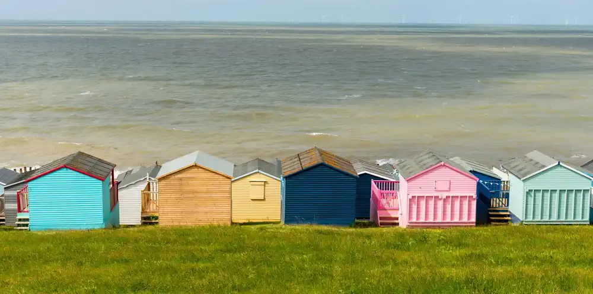
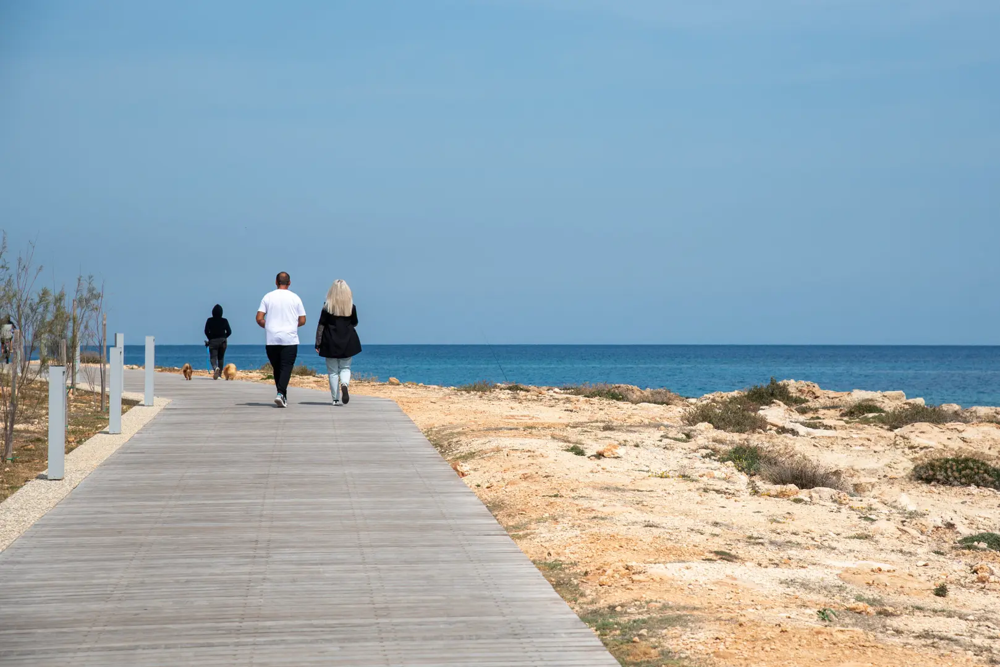
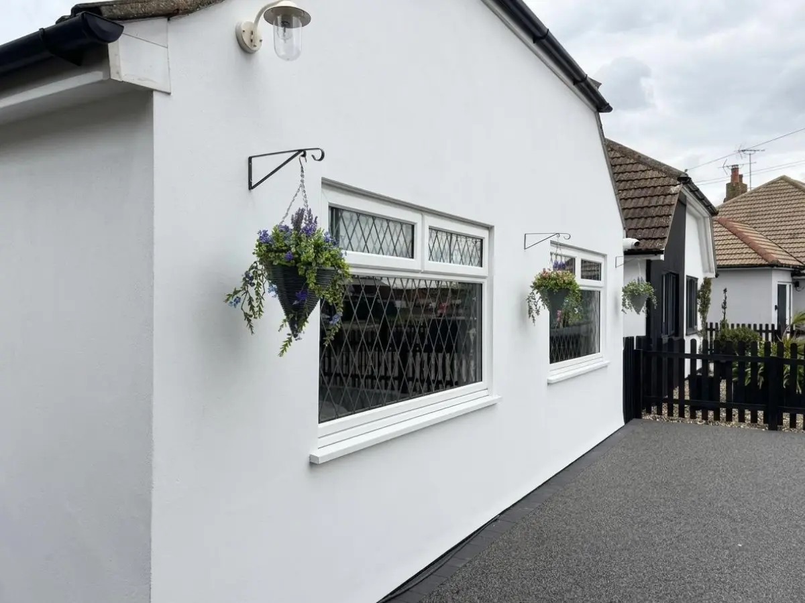
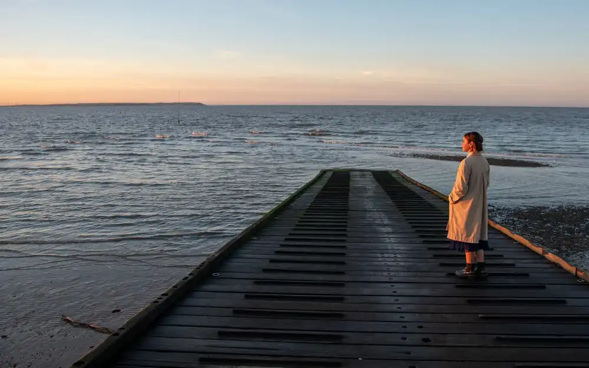
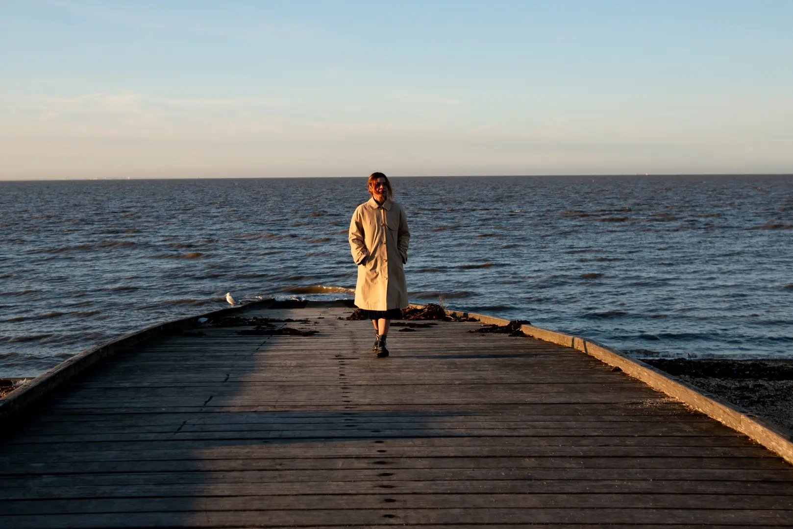
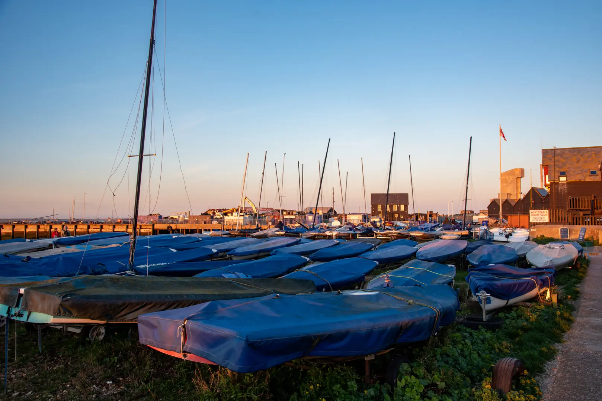
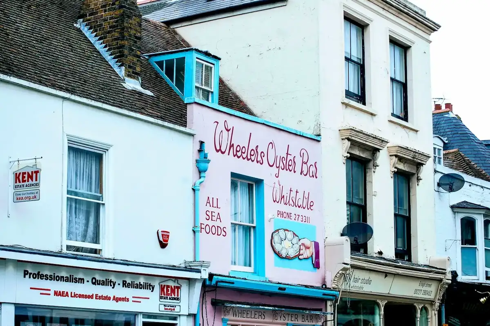
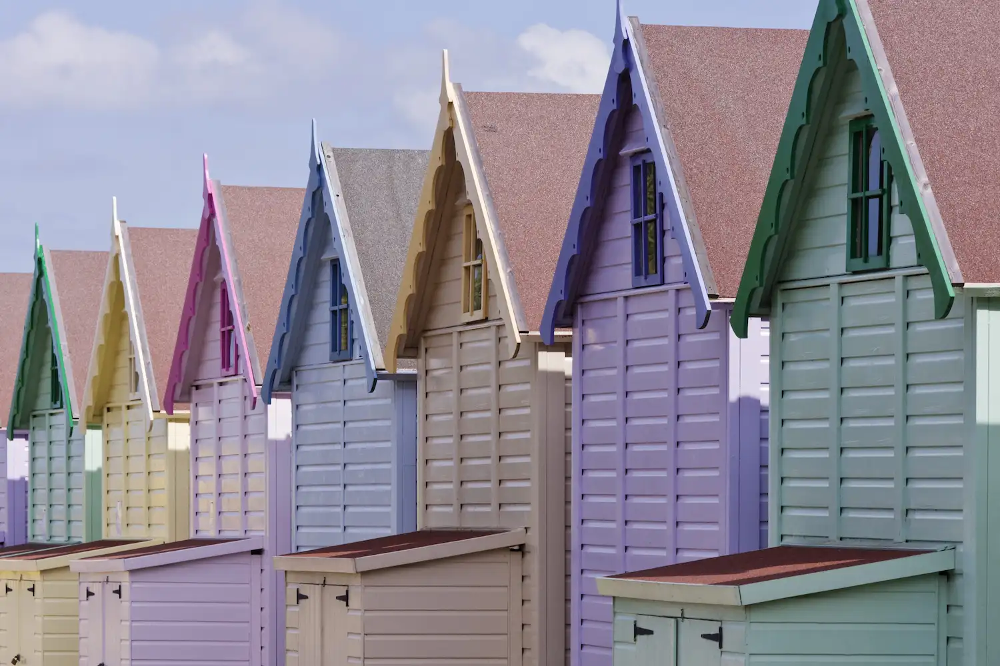

Whitstable Castle & Gardens (opens in new tab)
Paved grounds and Orangery Tearooms with an accessible loo — a level stop about halfway along the promenade.
Promenade routes, Blue Badge parking, toilets, eating out and day trips, written for wheelchair users and carers staying at Restwell.
~90 min
Drive from London (M2 / A299)
75–90 min
Direct train — check National Rail
15 min
Walk to Tankerton promenade
Coastal walk
About two miles of paved route from Tankerton Slopes toward the castle and harbour. Beach slopes to the shingle are steep — stick to the promenade for level sea air.


Parking, plainly
Start from the driveway when you can. Harbour ANPR is the one that catches people out.
Along the route
Level stops on the promenade route, with access notes and links so you can check opening times before you set out.

Paved grounds and Orangery Tearooms with an accessible loo — a level stop about halfway along the promenade.

Working oyster port. South Quay Shed has a lift to a quieter upper floor. Surfaces can be uneven — take it steady at peak times.

Pub on the shingle. The terrace on firm ground is the realistic option — sloping floors inside, no step-free entrance.
Places to eat
The Plough is around the corner; JoJo’s and the Marine Hotel sit on Tankerton. Most Whitstable venues are older buildings — call ahead if access is critical.
Around the corner via the footpath between 71 and 73 Russell Drive. Step-free entry; no accessible toilet — confirm on the day if that matters.
Clifftop Mediterranean favourite. Wheelchair access and accessible toilet. Book ahead — it fills quickly.
Ground-floor lounge and restaurant, step-free, accessible loo by reception. Sea views from Marine Parade.

Loos along the way
Public and venue loos on the promenade route. Changing Places at the harbour needs a RADAR key.
Getting around
Travel times from London are in the strip above. Below: how to move around Whitstable once you’ve arrived.
Further afield
Check each venue’s site for scooter hire, companion tickets and parking for your dates.

~30 minutes. Mostly accessible woodland paths; scooters bookable ahead on 01227 209621.

Wheelchair accessible park; Nimbus Access Card and Essential Companion scheme. Accessible parking nearby.
~20 minutes by car. Cathedral Welcome Centre lends wheelchairs; riverside and Westgate Gardens are smoother than the cobbles.
Local access
Tankerton promenade, Blue Badge parking, and what the shingle beach can and can’t do.
With planning, yes for paved routes. Tankerton’s level promenade works well; loose shingle and some older streets do not. Use Blue Badge parking notes, the harbour RADAR toilet, and a step-free base like Restwell.
Compact seaside town with harbour and independents; surfaces vary. From Restwell, town centre is roughly 15 minutes on a flat paved route; Tankerton promenade about 15 minutes — wide, level and fully surfaced. Stay on the paved path; grassy slopes above are steep.
Yes if you plan parking, toilets and seafront routes first. Tankerton promenade is the main long level coastal stretch. Restwell’s step-free bungalow with driveway parking removes the hardest accommodation barrier.
Favour paved promenades over shingle or steep slips. Tankerton’s promenade near Restwell is the local stretch we use most. A step-free bungalow means the day is about the route, not stairs at the house.
Secure step-free accommodation first; use Tankerton promenade for sea air; check accessible toilets and parking; leave rest days in the plan. This guide lists the local detail from Russell Drive.
Level promenade, nearby parking and toilets — and knowing the shingle beach itself is not wheelchair-friendly. The promenade above is the coastal route. We don’t assume beach wheelchairs; ask locally if you need one.
A private adapted base, known level routes, quieter timing if crowds are hard, and a backup indoor plan for weather. Restwell is that base on the Kent coast, with optional Continuity care if you need it.
Tell us chair size and energy levels — then see the bungalow on Russell Drive.